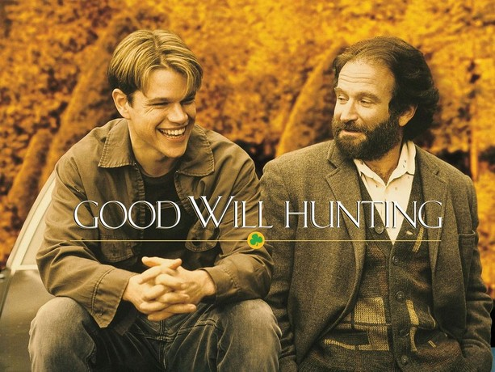
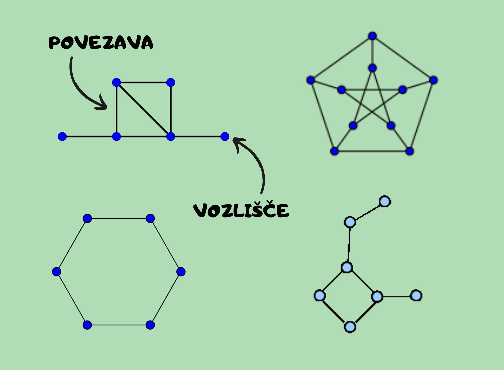
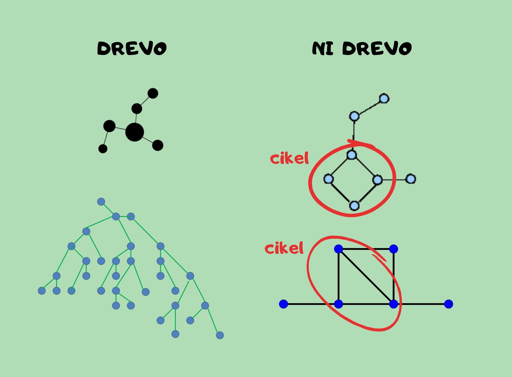
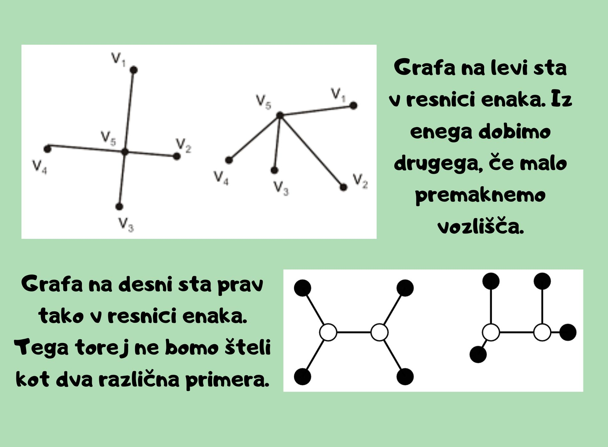
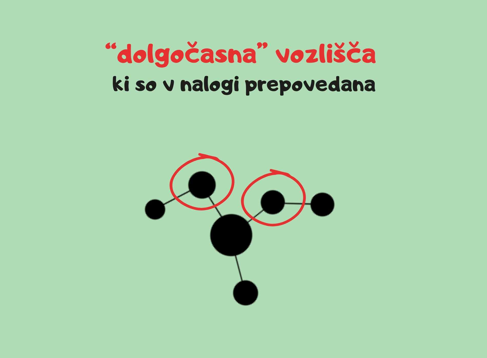
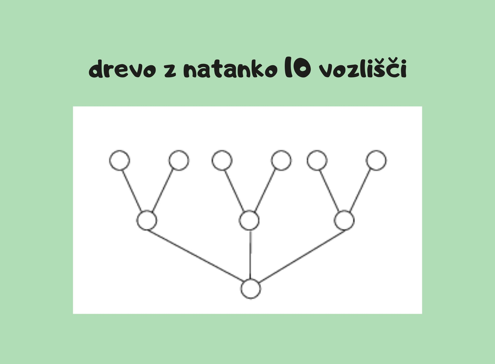
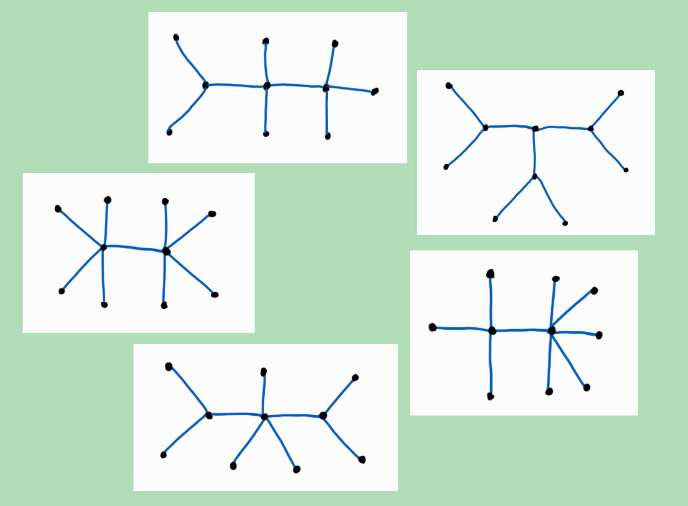
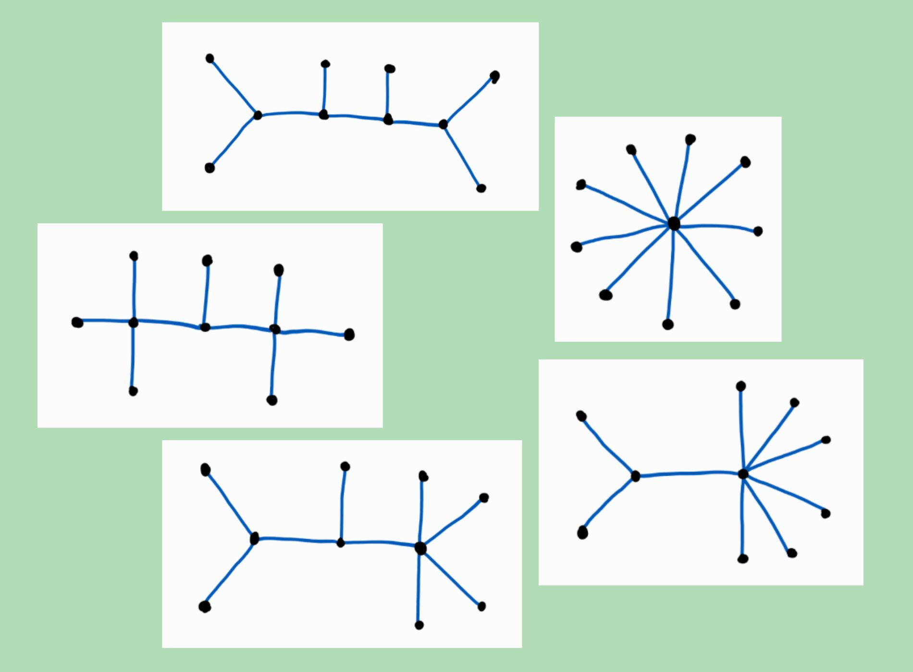

layout: true background-color: grey background-image: url(ozadje5.jpg) background-size: contain background-repeat: no-repeat --- class: center, middle # Matematični problem v filmu <br> Good Will Hunting Povzeto po [YouTube posnetku s kanala Numberphile](https://www.youtube.com/watch?v=iW_LkYiuTKE). --- class: left, top ## Nekaj o filmu - sprva mišljen fizikalni genij - matematika ni v ospredju filma - MIT profesor da "težko" nalogo študentom - glavni lik Will: matematični genij samouk, hišnik na MIT - navdih za zgodbo: [George Dantzig](https://en.wikipedia.org/wiki/George_Dantzig) <div class="right"></div> --- class: left, middle *Kaj rabimo vedeti, preden se lotimo problema?* ## Grafi in drevesa ***Graf*** je množica točk (imenovanih **vozlišča**) in črt (ki jim rečemo **povezave**) med njimi. <div class="right"></div> --- count: false class: left, middle *Kaj rabimo vedeti, preden se lotimo problema?* ## Grafi in drevesa ***Drevesa*** so grafi **brez ciklov**. <div class="right"></div> --- ## Matematični problem Nariši vsa homeomorfno ireduktibilna drevesa velikosti $10$. <div class="center"><img src="vprasaj.png" width="200"></div> --- count: false ## Matematični problem Nariši vsa homeomorfno ireduktibilna drevesa velikosti $10$. ### Pravila "po domače": 1. drevesa morajo biti *zares* različna <div class="right"></div> ??? - pokaži z rokami, kaj misliš s "premikanjem" vozlišč - omeni kaj matematično pomeni enaka grafa (homeomorfizem med grafoma) --- count: false ## Matematični problem Nariši vsa homeomorfno ireduktibilna drevesa velikosti $10$. ### Pravila "po domače": 1. drevesa morajo biti *zares* različna 2. ne dovolimo vozlišč, iz katerih gresta le dve povezavi (t.j. vozlišč kjer se "nič ne zgodi") <div class="right"></div> --- count: false ## Matematični problem Nariši vsa homeomorfno ireduktibilna drevesa velikosti $10$. ### Pravila "po domače": 1. drevesa morajo biti *zares* različna 2. ne dovolimo vozlišč, iz katerih gredsta le dve povezavi (t.j. vozlišč kjer se "nič ne zgodi") 3. želimo natanko $10$ vozlišč <div class="right"></div> --- ## Rešitev Vseh iskanih grafov je $10$. Tukaj jih je $5$. **Preden klikneš na naslednjo prosojnico, ostalih $5$ grafov <br> poskusi najti sam/a.** <div class="right"></div> --- count: false ## Rešitev Še ostalih $5$ iskanih grafov. <div class="center"></div> --- class: center, middle # Ni bilo tako težko, kajne? 😁 Film je kljub temu odličen, zato priporočam njegov ogled. 😉